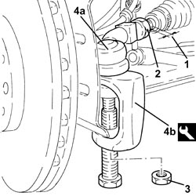

4110B10 STEERING LINKS - R+R ON VEHICLE - CHECK TOE-IN/TOE-OUT SEPARATELY
- Path
- Procedures > 41 STEERING UNIT > 4110 STEERING CONTROL AND LINKAGE > 4110B STEERING CONTROL LINKAGE > 4110B10 STEERING LINKS - R+R ON VEHICLE - CHECK TOE-IN/TOE-OUT SEPARATELY
- Kind
- repair procedure (removal / refitting; the operation number is the code)
- Applies to
- all engines; all production periods
- Interactive page
- https://sloeber94.github.io/elrnDB-aBrrSpdr/en/#/946002174
Applies to: all engines; all production periods
 Removing
Removing
 Refitting
Refitting- Position the vehicle on a lift.
Op. 4450B02 LEFT FRONT WHEEL - R.R
1. Measure the free length of the steering rod thread.
2. Loosen the locknut.
3. Undo the nut fixing the steering rod to the right front steering knuckle.
4. Disconnect the steering rod (4a) from the right front steering knuckle using the tool (4b).
Tool | Description | Function | Validity |
|---|---|---|---|
1871000700 | Extractor | Extracting steering rod from strut |

Applies to: all engines; all production periods
- Remove the steering rod by unscrewing it from the power assisted steering box by hand.
Applies to: all engines; all production periods
Refitting
Removing- Tighten the steering rod on the power assisted steering box observing the free length of the thread measured at the removal.
- Connect the steering rod to the right front steering knuckle and secure it tightening a new nut to the recommended torque.
Component | Fastening | dia | Value (daNm) | Validity |
|---|---|---|---|---|
Steering rods | Nut | M12 | (steering knuckle side) 9.0 - 11.0 |
- Tighten the locknut the recommended torque.
Component | Fastening | dia | Value (daNm) | Validity |
|---|---|---|---|---|
Steering rod | Locknut | M20 | (power assisted steering box side) 11.7 - 14.3 |
Op. 4450B02 LEFT FRONT WHEEL - R.R
- Remove the vehicle from the lift.